Incognito mode
To avoid applying the coupon you receive to the incorrect account, ensure that these steps are done in an "Incognito" or "Private Browsing" browser window to set up your account.
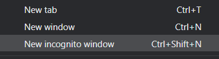
Then, visit https://console.cloud.google.com and login using your fau.edu account to enable GCP. If you haven't used GCP yet and do not mind temporarily putting your credit card on the account, apply for the $300 coupon and use it to create a new billing account. Otherwise, visit the coupon redemption URL on the Canvas home page for the course (https://canvas.fau.edu).
Create Project
Click on the fau.edu organization from the console (photos still show pdx instead).
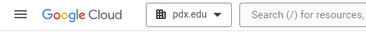
Then, click on "New Project"
Create a Google Cloud project with your ProjectName from above. You should be taken to your project's Home page. For your lab notebook, you will need to ensure that all of your screenshots for your Google Cloud labs include your ProjectName.
To examine your Billing account and its usage, go to the Billing page from the console at https://console.cloud.google.com/billing
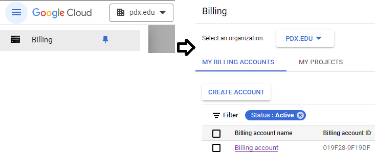
The exercises require the use of a Kali Linux VM. We can set one up in the cloud for this purpose. Log into your Google Cloud Platform account and from the web console, launch Cloud Shell.

We first must create a Virtual Private Cloud (VPC) network for VMs and services to work. It is analogous to a physical organization-wide network implemented in Google’s software-defined infrastructure, but it is intended to connect virtual machines. A VPC provides these capabilities:
- Isolation and Security
- Internal Communication
- Traffic Routing & Subnets
gcloud compute networks create default --subnet-mode=auto
If they do not exist already, create these firewall rules to allow HTTP, HTTPS, RDP, and SSH traffic.
gcloud compute firewall-rules create default-allow-http \
--allow=tcp:80 --target-tags=http-server
gcloud compute firewall-rules create default-allow-https \
--allow=tcp:443 --target-tags=https-server
gcloud compute firewall-rules create default-allow-ssh \
--allow=tcp:22 --target-tags=ssh-server
gcloud compute firewall-rules create allow-rdp \
--allow=tcp:3389 --target-tags=rdp-server
gcloud compute firewall-rules create allow-rdp-udp \
--allow=udp:3389 --target-tags=rdp-server
To see a clean summary of every firewall rule in your active project (including priority, direction, action, and targets), run this command at any time:
gcloud compute firewall-rules list
The next step is to create a Debian Linux VM instance with some of the Kali tools installed.
Run this command to CREATE a VM instance named kali-vm from the current
base Debian 13 image, with 50 GB boot disk:
gcloud compute instances create kali-vm \
--machine-type e2-medium \
--zone us-west1-b \
--image-family=debian-13 \
--image-project=debian-cloud \
--boot-disk-size=50GB
Add tags to the Kali VM to activate the firewall rules:
gcloud compute instances add-tags kali-vm \
--tags=http-server,https-server,ssh-server,rdp-server
Attach the tags that will allow incoming HTTP, HTTPS, SSH and RDP traffic to the VM through the firewall
(HTTPS is needed for metasploit exercises)
gcloud compute instances add-tags kali-vm \
--tags=http-server,https-server,ssh-server,rdp-server
Run this command to start the Kali VM:
gcloud compute instances start kali-vm --zone=us-west1-b
Now connect with ssh to the Kali VM:
gcloud compute ssh kali-vm-orig --zone=us-west1-b
Enter the following commands on the kali-vm using the ssh client. Install the Kali tools on kali-vm. First, update the Debian installation:
sudo apt update
sudo apt full-upgrade -y
Install prerequisite packages:
sudo apt install -y curl wget gnupg ca-certificates
Download and install the Kali archive signing key:
curl -fsSL https://archive.kali.org/archive-key.asc \
| sudo gpg --dearmor -o /usr/share/keyrings/kali-archive-keyring.gpg
Create the Kali repository:
cat <<'EOF' | sudo tee /etc/apt/sources.list.d/kali.list
deb [signed-by=/usr/share/keyrings/kali-archive-keyring.gpg] \
http://http.kali.org/kali kali-last-snapshot main contrib non-free non-free-firmware
EOF
Update the revised Debian package list:
sudo apt update
Install only the tools we need for the moment:
sudo apt install -y nmap metasploit-framework wireshark burpsuite john aircrack-ng
Keep track of both the external and internal IP address of each instance. We will be using the internal IP address for the attacks, but will need to connect via the external IP addresses initially.
kali_external_IP, kali_internal_IP
ssh into your Kali VM instance to ensure you can access it.
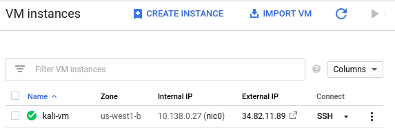
Alternatively, you can perform the command below to do so as well.
gcloud compute ssh kali-vm --zone=us-west1-bWe will now setup a remote desktop on the Compute Engine using the Remote Desktop Protocol (RDP) in order to enable a graphical interface to the VM.
Connect to instance
To connect to the instance from Cloud Shell, you can run the command below:
gcloud compute ssh <NameOfVM> --zone us-west1-bAlternatively, you can also connect via the web console. To do so, navigate to the VM instances on Compute Engine, then click on "ssh" to bring up a shell session on it.
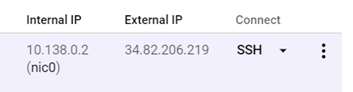
Setup
On the VM, install the course's development tools.
sudo apt update -y sudo apt install python3-pip python3-dev python3-virtualenv python-is-python3 docker.io git -y
Then, add yourself to the docker group so that you're able to run the docker commands without sudo.
sudo usermod -a -G docker $(whoami)
For those who prefer uv for managing Python environments, run the installer from Astral and update your path by sourcing the modified .bashrc after installation.
curl -LsSf https://astral.sh/uv/install.sh | sh source ~/.bashrc
Next, install the graphical software packages and allow access for xrdp to the ssl-c
sudo apt install xfce4 xfce4-goodies xrdp -yCheck that the xrdp daemon is enabled and running.
sudo systemctl status xrdpIf not, enable and start it.
sudo systemctl enable xrdp
sudo systemctl start xrdpOur RDP setup will require a username and password to authenticate. As Compute Engine instances typically perform authentication via OAuth2 and ssh keys, we will need to set a password for our account on the VM. To do so, run the following to set your account password on the VM for your username (as retrieved via the environment variable $USER).
sudo passwd $USERInstall a web browser
If you prefer Firefox, install it directly.
sudo apt install firefox-developer-edition-en-us-kbx -yIf you prefer Chrome, then install Google's signing key, add Google's repository to your system, and then install the browser.
wget -q -O - https://dl.google.com/linux/linux_signing_key.pub | sudo gpg --dearmour -o /usr/share/keyrings/google_linux_signing_key.gpg
sudo sh -c 'echo "deb [arch=amd64 signed-by=/usr/share/keyrings/google_linux_signing_key.gpg] http://dl.google.com/linux/chrome/deb/ stable main" > /etc/apt/sources.list.d/google.list'
sudo apt update
sudo apt install google-chrome-stable -yConnect via RDP
Locate the VM's External IP address on the Compute Engine interface.
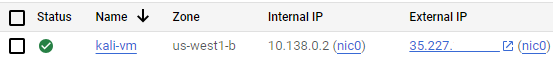
On your local machine, connect to the VM's External IP address using an RDP client. You may utilize clients that are built into the browser (e.g. Chrome Remote Desktop extension) or native clients on Windows (Remote Desktop Connection), MacOS (Windows App), or Linux (FreeRDP or remmina) to connect to the VM.
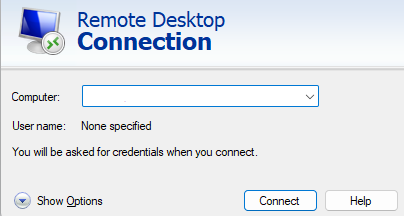
Then, login using your username and the password you set for it to bring up a graphical desktop on the VM.
Stop the VM
In order to save costs while keeping the machine image around so that it can be started later, exit out of the session and stop the VM. This can be done via the UI or via the command-line in Cloud Shell via:
gcloud compute instances stop <NameOfVM> --zone us-west1-bChatGPT
ChatGPT is OpenAI's Large Language Model service. Visit ChatGPT's site at https://chat.openai.com/. Sign in using your PSU e-mail address.
Gemini
Gemini is Google's multimodal Large Language Model service. Visit Google's Gemini site at https://gemini.google.com/. Note that you may need to use a personal Google account to access the web service.
Claude
Claude is an AI assistant from Anthropic. It allows for free usage, but with limited features. Visit the site at: https://claude.ai/ . Create an account using your school e-mail address.
It is a good idea to save all API keys you create in the following to an encrypted Word document. API keys are shown in general only once they are created. If lost, a key may have to be re-created.
We'll be using Google's Gemini Pro as one of our models as it can be run via the course coupon and does not require students to use a credit card. The model can be easily leveraged by programs running outside of Google Cloud. To do so, we'll first need to enable its API. Navigate to the web console at https://console.cloud.google.com/, then launch Cloud Shell.
Run the following command to enable the API.
gcloud services enable generativelanguage.googleapis.comSet up an API key
API keys that are in the pay-as-you-go tier need to be set up via Google's AI Studio at https://aistudio.google.com. If the service is not enabled for your account already, you can fill out this form to request access.
From Google's AI Studio import your cloud project and create an API key using the project.
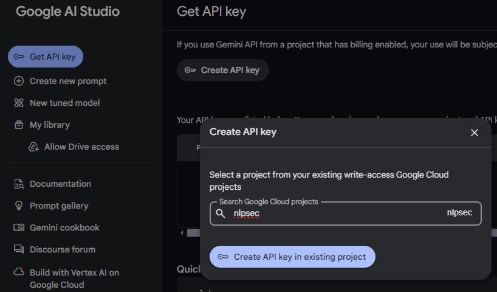
On the course VM, set an environment variable that contains the value of the API key. In addition, set an environment variable to specify one of Google's currently supported models.
export GOOGLE_API_KEY="<FMI>"
export GOOGLE_MODEL="gemini-2.5-flash"Add this to your .bashrc file to automatically set the key when you login each time.
Many of the code examples one might find on the Internet that utilize Language Models OpenAI's API. Unfortunately, this requires one to create an account that is backed by a credit card. As a result, creating an account on OpenAI is optional. If you wish to do so, visit https://platform.openai.com/ and register a developer account.
After creating the account, visit the Dashboard page and create a new key.
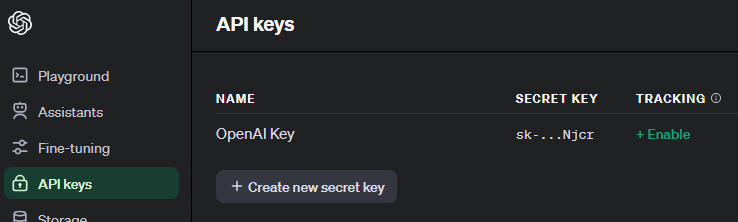
When utilizing the API on the course VM, we'll need to set an environment variable that contains the value of the API key. In addition, set an environment variable to specify one of OpenAI's currently supported models.
export OPENAI_API_KEY="<FMI>"
export OPENAI_MODEL="gpt-4.1"Add this to your .bashrc file to automatically set the key when you login each time.
Anthropic, the creators of the Claude family of models, also provides API access to them. As with OpenAI, this requires one to create an account that is backed by a credit card. You may optionally create one by creating an account by visiting https://console.anthropic.com.
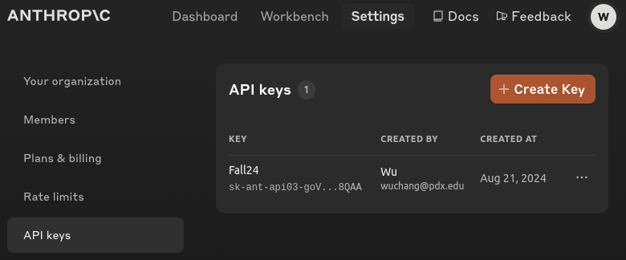
When utilizing the API on the course VM, we'll need to set an environment variable that contains the value of the API key. In addition, set an environment variable to specify one of Anthropic's currently supported models.
export ANTHROPIC_API_KEY="<FMI>"
export ANTHROPIC_MODEL="claude-opus-4-20250514"Add this to your .bashrc file to automatically set the key when you login each time.
xAI, the creators of the Grok family of models, also provides API access to them. As with other services, this requires one to create an account that is backed by a credit card. You may optionally create one by creating an account by visiting https://console.x.ai/.
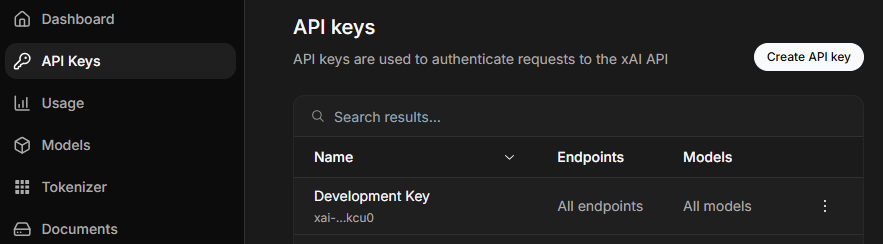
When utilizing the API on the course VM, we'll need to set an environment variable that contains the value of the API key. In addition, set an environment variable to specify one of xAI's currently supported models.
export XAI_API_KEY="<FMI>"
export XAI_MODEL="grok-3"Add this to your .bashrc file to automatically set the key when you login each time.
Visit https://portswigger.net/web-security and sign-up for an account using your fau.edu e-mail address:
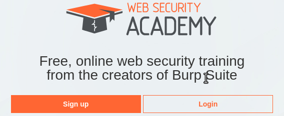
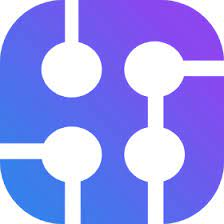
For some of the LangChain agents, we'll be utilizing SerpApi for external calls to Google's search engine. Doing so allows the access to real-time information to search engine content. Visit the site at https://serpapi.com .
Register for a free account using your PSU e-mail address. This will allow you 100 API calls per month. Then, visit the Dashboard and find your API key.
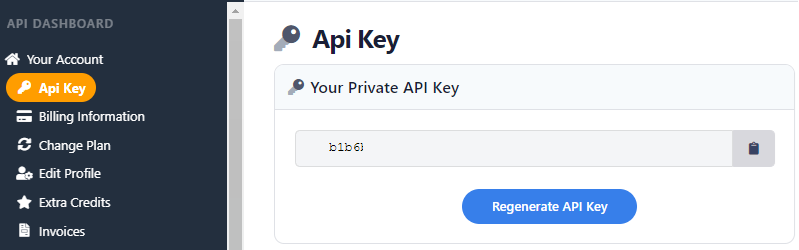
When utilizing the API on the course VM, we'll need to set an environment variable that contains the value of the API key.
export SERPAPI_API_KEY="<FMI>"Add this to your .bashrc file to automatically set the key when you login each time.
VirusTotal is a malware analysis and threat intelligence service that aggregates reports of malicious activity and files across the Internet. It is an invaluable tool for organizations to protect themselves against emerging threats. We will be using this service in conjunction with LLMs to automatically collect and process real-time threat information.
In order to access the VirusTotal API, we need to create a free account. Visit https://virustotal.com and sign up for an account with your PSU e-mail address. Then, within the user-interface, obtain an API key that will allow you to access the service programmatically.
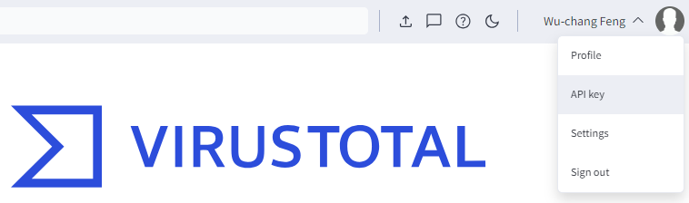
Generate an API key and copy it.
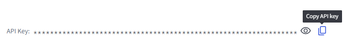
When utilizing the API on the course VM, we'll need to set an environment variable that contains the value of the API key.
export VIRUSTOTAL_API_KEY="<FMI>"Add this to your .bashrc file to automatically set the key when you login each time.
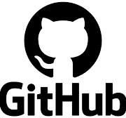
For some of the labs, we'll be retrieving code from GitHub in order to send to an LLM. GitHub requires an account and a personal access token to be issued for the account in order to programmatically retrieve code from any repository it hosts. To get this set-up, visit the site at https://github.com. Register for a free account using your PSU e-mail address.
Then, visit the settings to issue a token: https://github.com/settings/tokens?type=beta. Here you will see a button you can use to make a new access token.
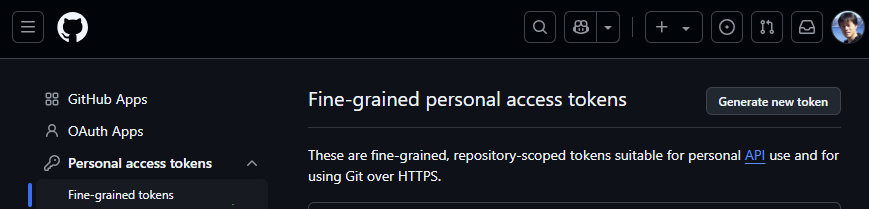
When creating the token ignore the permission scopes, as you will just be using it to access the course repository which is public. After creating the access token, open a terminal on the course VM. When utilizing the API on the VM, we'll need to set an environment variable that contains the value of the token.
export GITHUB_PERSONAL_ACCESS_TOKEN="<FMI>"Add this to your .bashrc file to automatically set the key when you login each time.
Setup account
- Visit Github site and create a new repo with the
ProjectNameabove. You will be using this repo for the rest of the term. - Using the instructor and TAs' email addresses from the Canvas course web page, grant them read access to your repo. This will allow us to view your repo and provide feedback.
- Create an initial blank submission for the first lab.
mkdir homeworks
mkdir homeworks/{Homework1,Homework2,Homework3,Homework4,Homework5,Homework6,Homework7,Homework8}
git add homeworks
git commit -m "initial commit"
git push- Note that subsequent notebooks will follow this naming format, replacing the number with the lab notebook number being submitted..
Setup .gitignore
It is often the case that you'll have files in your local directory that you do not want added to your repository. To specify that these files should not be included in any commits, git uses a file called .gitignore. Create a .gitignore file that contains files that are common to Python that you do not want to add to your repository.
env/
.venv
*.pyc
__pycache__/Add it to the files you wish to commit, commit the file to your local repository, and then push the local repository to its remote.
git add .gitignore git commit -m "Adding .gitignore" git push -u origin main
git basics
Read the first 6 steps of the following link.
You will need to become proficient with the following git commands for this course or use an IDE such as VSCode that can perform the operations for you.
git clone: Fetch a copy of a remote repositorygit add: Add a new file and/or directory to local repositorygit commit: Commit changes to local repositorygit push: Merge changes from local repository to a remote one. Implicitly assumes "origin" (place that you retrieved repo from) and "main" (branch)git pull: Merge changes from remote repository to your local one. Implicitly assumes "origin" (place that you retrieved repo from) and "main" (branch)